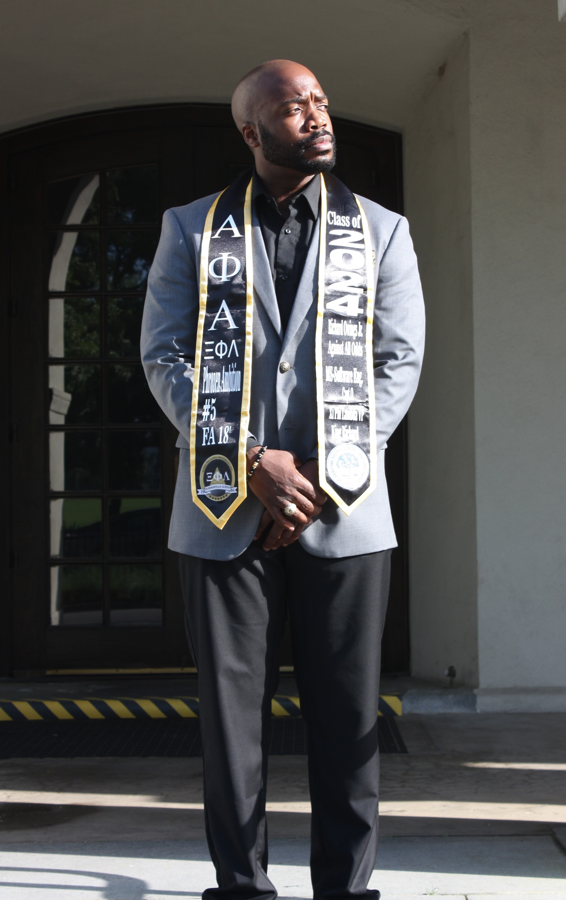

Richard Owings Jr
richardowingsjr@gmail.com
EDUCATION AND TRAINING
Master of Science in Computer Science concenctration in Software Engineering
Bachelor of Science in Electrical Engineering
CORE COMPENTENCY
• Software Development/Engineering
• Automation Process & Control Systems
• Windows Server Networking
• Manufacturing Design & Mechatronics Automation
• Electrical Installation and Electrical Layout
CORE BACKGROUND
- Active Security Clearance: SECRET
- 15 Years in United States Air Force Reserves (Currently still serving)
- Software Development (Backend, Frontend, Full Stack Experience)
- Automation Processes (Conveyor Systems, Assembly Lines, Robotics, and Multi- Platform Communication).
- Experience with Software Pipeline CI/CD
- Agile Scrum
- Design pattern usage
- Full software life-cycle development
- GitHub & GitLab
- Azure Development Tools
- AWS
- REST API
- Spring Boot
- Electrical Schematics, Flowcharts, & Wiring Diagrams.
- Proficient in Programmable Logic Controllers (Allen-Bradley, Siemens, Bosch Rexroth, and Red Lion)
- Programming Languages (Java, C#, Python, SQL, HTML5, IndraLogic, Codesys, C++, Matlab, Siemens SCL and Step 7, and Allen-Bradley Ladder Logic)
- Software (Visual Studio, IntelliJ, Visual Studio Code, Kubernetes, Docker, Linux (Ubuntu), Eclipse, Siemens TIA Portal, Allen-Bradley RSLogix & Studio 5000, Indralogic, Codesys, AutoCAD Electrical & Mechanical, Microsoft Visual Studio, Microsoft Visio, Arduino, Matlab, Visual Basic for Applications (Excel), Siemens Starter, Kuka, and Red Lion Crimson 3.0)
TECHNICAL EXPERIENCE
03/08/2023 - present
Boeing – Software Developer/Programmer Analyst III
-
Dedicated and solutions-focused Application Developer with a rich and extensive background in designing, programming, testing, and maintaining computing applications across diverse platforms. Adept at deeply analyzing user requirements, understanding intricate system nuances, CI/CD pipelines using Azure DevOps tools and determining optimal system specifications to ensure top-tier software compatibility and robust security. Demonstrated proficiency in seamlessly integrating software, database, and delivery subsystems, leading to the creation of cohesive, efficient, and user-centric applications. Armed with a meticulous approach, I have a consistent track record of troubleshooting and rectifying application architecture challenges, ensuring optimal system uptime. Beyond mere development, I remain committed to monitoring system performance, recommending tangible improvements, and translating end-user needs into functional, scalable, and secure software solutions that drive business value and user satisfaction. Leads and performs the design, program, test, implementation and documentation of complex computing applications and software or computing architecture and computing application system designs. Leads analysis of end user processes to define application requirements. Writes and compiles complex code based on documented design or designs application architecture that integrates application software and delivery subsystems for specific applications. Modifies or upgrades complex applications to maintain functionality and performance. Identifies and recommends improvements. Identifies and resolves complex programming or application architecture problems.
12/03/2022 – 03/08/2023 (Contract)
Mandex – Software Developer/Computer Systems Analyst III
-
Provides DCGS-MC System-of-Systems (SoS) lifecycle support services to Naval Information Warfare Center (NIWC) Atlantic, to include research, development, production, and fielding of scalable, secure, interoperable, sustainable, and survivable Command, Control, Communications, Computers, Combat Systems, Intelligence, Surveillance, Reconnaissance (C5ISR), Information Operations (IO), and Enterprise Information Services (EIS) capabilities. Support also includes the development of new C5ISR and information technology (IT) capabilities, the maintenance and upgrade of existing C5ISR and IT capabilities, and the integration of existing hardware and software capabilities into a consolidated system baseline. Supports NIWC Atlantic migration of select United States Marine Corps (USMC) Intelligence, Surveillance, and Reconnaissance (ISR) processing and exploitation capabilities into a single integrated hardware and software baseline. Provides support for end systems that deliver consist scalable and functional capabilities for providing All-Source and Geospatial Intelligence (GEOINT) processing, exploitation, and dissemination capabilities to support USMC intelligence analysts across the Marine Air-Ground Task Force (MAGTF), with the goals of increasing the discoverability, accessibility, and comprehension of organic and internal ISR data through a scalable and standards-based system architecture.
08/15/2022 – 12/03/2022
Naval Information and Warfare Center (NIWC) – Electronics/Software Engineer
-
Executing full lifecycle software development, programs well-designed, testable, efficient code, produces specifications and determine operational feasibility, create software using the right programming languages, platforms and architectures. Develops, test, improve and maintain software by other engineers. Frequently consult with clients, other engineers, security specialists and other internal stakeholders. Develops information systems by designing, developing, and installing software solutions. Determines operational feasibility by evaluating analysis, problem definition, requirements, solution development, and proposed solutions. Develops software solutions by studying information needs, conferring with users, and studying systems flow, data usage, and work processes. Investigates problem areas. Follows the software development lifecycle. Documents and demonstrates solutions by developing documentation, flowcharts, layouts, diagrams, charts, code comments and clear code. Prepares and installs solutions by determining and designing system specifications, standards, and programming. Improves operations by conducting systems analysis and recommending changes in policies and procedures. Obtains and licenses software by obtaining required information from vendors, recommending purchases, and testing and approving products. Protects operations by keeping information confidential. Provides information by collecting,
analyzing, and summarizing development and service issues. Accomplishes engineering and organization mission by completing related results as needed.
01/31/2022 – 08/12/2022
Scientific Research Corporation – Software Developer II
-
Participates in a fast-paced Agile development environment. Works with the project stakeholders to understand the gaps in the system. Works with the project stakeholders to identify and assesses new software applications and frameworks for the system. Installs and configures new software applications and provides demonstrations and recommendations to assist the project stakeholders with determining if the solution is right for the system. Troubleshoots issues with installation/configuration and coordinate with application vendors as required. Makes technical recommendations for future changes to the system to support new functionality provided. Makes recommendations for new functionality or enhancements to existing functionality. Coordinates with developers and UX engineers to provide recommendations of future improvements. Develops scripts and/or code to integrate new applications with existing applications and data sources. Coordinates development tasks with other developers to assist as needed. Updates the system when application updates are available. Reviews vendor configuration files and code to integrate new data sources and troubleshoot installation. Provides support during system testing to troubleshoot and resolve issues. Provides input for application and system documentation.
12/03/2020 – 02/22/2021 (Laid-off due to force-reduction from COVID)
IFA Rotorian – Controls Engineer
-
Performed consistent improvements on assembly equipment by making programming changes in the PLC or other systems to reduce cycle time and increase reliability. Developed and changed of automation processes through programming the PLC, and integration of other peripheral components such as camera systems into current applications. Provided higher level of support for maintenance technicians during break down situations by diagnosing plc logic to determine cause of stoppage. Administration and key user for internal control of program archives and backups, and coordination of interface between Shopfloor IT and industrial networks including Profibus, Profinet. Supported standardization of equipment and adherence of standards by working closely with suppliers. Additional tasks as required including after hour support and remote support.
12/03/2018 – 12/07/2020
Robert Bosch GmbH – Controls Engineer
-
Investigate and solve root causes of manufacturing process problems. Instruct and train associates in new processes, systems, and equipment. Identify and lead projects to improve cost, quality, delivery, utilization, and safety of manufacturing processes in order to meet key metrics within the workshop. Modified and upgraded software requirements to PLC based controllers. Evaluation of new equipment electrical schematics and cabinets for machine acceptances (Bosch GDS requirements). Design, build and support systems, which may include pneumatics, servo drives, relay switches and sensors, and communications networks. Design and integration for repurposing of machines, equipment, and devices. Works on motors, drive controllers, and VFDs, laser marking systems, part handling automation, robotics, and vision systems such as Cognex or Keyence cameras. Read, interpret, and modify electrical schematics and diagrams using electrical design software. Support design and implementation of Industry 4.0 projects to support manufacturing visibility and TPM projects such as machine status, vibration and temperature monitoring. Setup up test bench for training environment, to train other associates on controls related topics. Served a SME for PLC & Robotic Controllers (Stäubli) and worked as the department ITM Manager for server access and device configuration. Worked with data extraction from .dat files to the PLC controller to be able to pull in typedata that is configured per part type. Developed and implemented new safety systems and device to cut down on cycle time and keeps associates safer doing operations. Specialized in LEAN Manufacturing using the KZT process and cost saving initiatives.
05/01/2017 – 12/03/2018
Volvo Cars USA – Electrical & PLC Equipment Engineer
-
Project Management and document control of Equipment and Tool Engineering process. Understanding of Volvo PLC standards. Work with line builders in support of any electrical or PLC problems. Single point of contact for Glazing Cell of factory production equipment. Use of Electrical Engineering theories as they apply to buildings and the equipment. Create or interpret CAD drawings for production equipment and assigned assets. Designed safety systems for machine controls and robotic operations. Knowledge of manufacturing, methods, fabrication processes. Ability to research distributed control, sensory data, image processing and fusion, advanced control schemes, high fidelity world perception modeling of systems and man-machine interfaces. Complete ability to research robot kinematics and dynamics, robot vision and navigation, design control structures for robot systems and manufacturing systems, artificial intelligence systems such as expert systems, neural networks and fuzzy logic for robotics applications, computer architectures and applications for automated and man/machine systems. Ability to use established physical, mechanical, or scientific principles and perform appropriate tests to identify and solve problems encountered on the job. This includes the ability to locate and isolate the problem, identify possible solutions, and select approaches that are practical and effective. Work with thin clients and VMWare to establish connection to the line devices that support production. Works with EPlan, Siemens Team Center, Siemens TIA Portal V14, and Matlab.
09/30/2016 – 04/28/2017
Boeing – Facilities Equipment Engineer
-
Project Management and document control of Equipment and Tool Engineering process. Single point of contact for specified types of factory production equipment. Use of Electrical Engineering theories as they apply to buildings and the equipment. Create or interpret CAD drawings for production equipment and assigned assets. Designed safety systems for machine controls and robotic operations. Knowledge of manufacturing, methods, fabrication processes. Ability to research distributed control, sensory data, image processing and fusion, advanced control schemes, high fidelity world perception modeling of systems and man-machine interfaces. Complete ability to research robot kinematics and dynamics, robot vision and navigation, design control structures for robot systems and manufacturing systems, artificial intelligence systems such as expert systems, neural networks and fuzzy logic for robotics applications, computer architectures and applications for automated and man/machine systems. Ability to use established physical, mechanical, or scientific principles and perform appropriate tests to identify and solve problems encountered on the job. This includes the ability to locate and isolate the problem, identify possible solutions, and select approaches that are practical and effective
01/23/2015 – 09/29/2016
Boeing – Robotics & Electrical Control Systems Integrator
-
I work independently with schematic layout and control system designs. Helped successfully integrate different OS with Siemens PLC system. Designed safety systems for machine controls and robotic operations. Integrated system setup for motion capture for new research technology and future production development. Participated in Lean+ practices for lean manufacturing. Work with Keyence safety controllers to integrate safety systems for hazard-free working in the research facility. I use my working knowledge of servo driven PLC/CNC and closed loop AC/DC Servo Systems equipment that use Allen-Bradly, Siemens, or Fanuc to repair machines. I use my knowledge of and experience in configuration, testing, start-up, troubleshooting and repairing industrial automation and robotics. I worked with embedded pc systems and hardware to program calibrated test and structured implementation. I work with AC & DC power systems for control cabinet design and layout. I am familiar with transformers and its effect on servo motor drives. I participate in weekly lab meetings ensure that our technological advances are valid and helps us compete with other companies and future competitors. I help support the development of productions systems that will be used by our company within the next couple of years. I am a valued member on a team dedicated to producing great quality and a sound product through scrum planning and intuitive innovatio